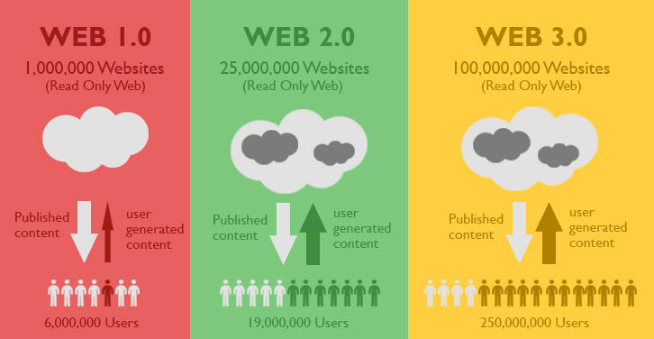
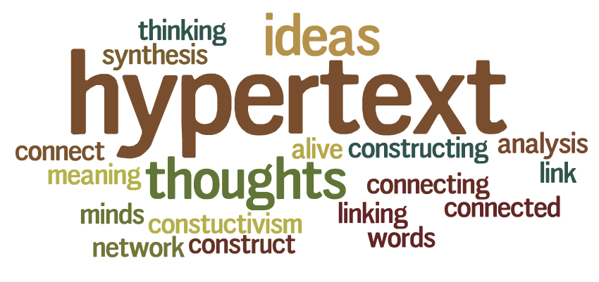
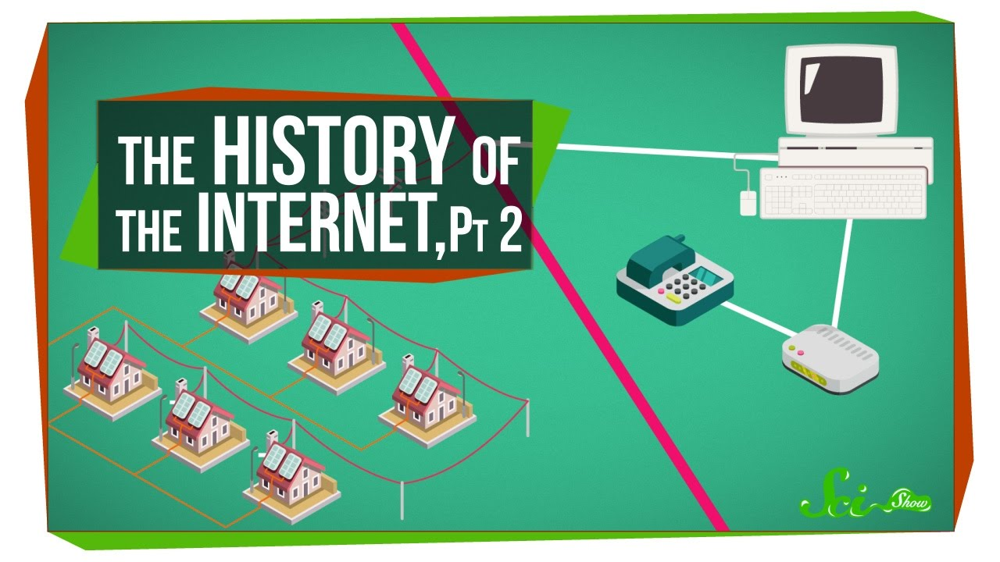

The Theory Side
Home
Character
Theory
About
The Garden of Forking Paths
The Library of Babel
Dot Com Bubble
First Browser War
Second Browser War
History of Flash
Web 1.0
Web 2.0
The Importance of Semantic Markup
What is hypertext
Ways of Teaching and Learning Online
History of the web part 1
History of the web part 2